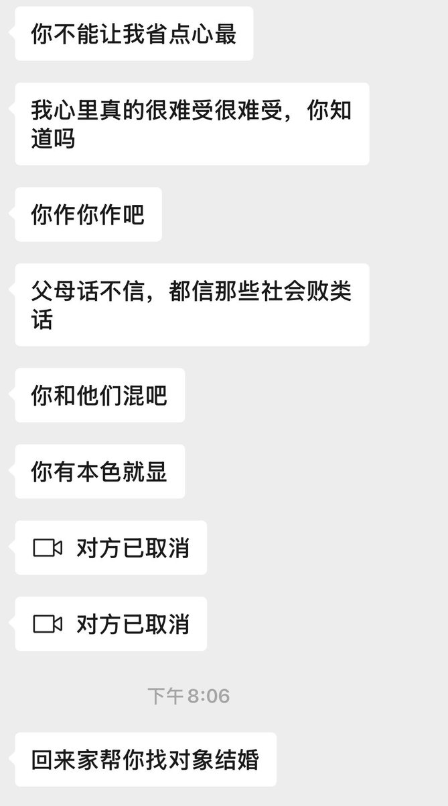
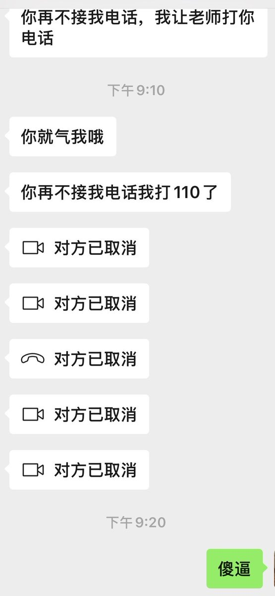

@QwQIO3O 我初中的时候，朋友叫我出去玩。就在本地，五六个人很安全。我当时没有手机，刚出门两个小时，我妈就疯狂电话轰炸我朋友我同学，还给人家家长打电话。后来我都没有朋友愿意和我一起玩了。。。



上次我晚上八点和朋友在一起逛学校时候没接我妈视频，她就以为我和之前去看林俊杰的同担在一起，还各种侮辱她们
然后说是逛学校的之后才消停，但是之后又犯病，还拿结婚这种事吓唬我，我觉得完全不能原谅，我之前因为相亲大哭过，所以她之后一次次拿这个来威胁我，真的特别特别恶 https://t.co/M564c1OB5O https://t.co/SY1y8SQxOS
然后说是逛学校的之后才消停，但是之后又犯病，还拿结婚这种事吓唬我，我觉得完全不能原谅，我之前因为相亲大哭过，所以她之后一次次拿这个来威胁我，真的特别特别恶 https://t.co/M564c1OB5O https://t.co/SY1y8SQxOS